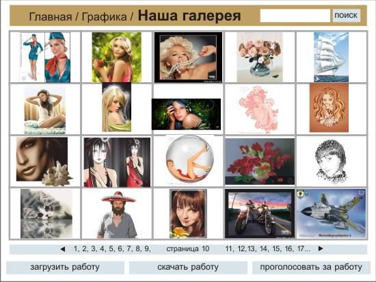
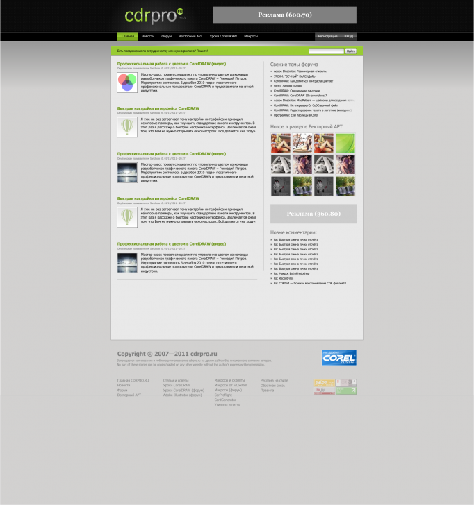

Дизайн и вёрстка cdrpro.ru
Sancho / 19.02.2010, 00:19/15:26
С недавних пор меня смущает текущий дизайн, да и вёрстка тоже, этого сайта. Я хочу сделать ре-дизайн. Есть ли какие то идеи или замечания? было бы весьма кстати. Хотелось бы услышать мысли как постоянных участников, так и вновь прибывших.
и размер аватаров уменьшить до хабровских :)))
а вот верхний баннер можно и оставить, и нижний добавить :) они не сильно отвлекают.
зато эти правые мельтешат постоянно и отвлекают от чтения статей или форума.
если уж так охота денег, то добавь текстовой рекламы после первого поста на странице (как в жж), только это дерганье справа убери!!!
mmgs, ты думаешь я на этих баннера делаю деньги? Ха ха. Если бы делал, сайт давно бы уже перенёс заплатив за это спецам. А так как сам сайт не приносит ни копейки (если не считать макросы, т.к. это отдельная тема), а только кушать просит (имя и хост), приходится всё делать самому.
Che bella cosa e' na jurnata 'e sole,
n’aria serena doppo na tempesta!
Pe' ll’aria fresca pare già na festa
Che bella cosa e' na jurnata 'e sole
Sancho,
Сегодня ещё раз убедился, что прав не тот, кто говорит и не тот, кто делает,
а правы те, кто и не говорят и не делают.
Мы тоже поубеждаемся в очередной раз, только в отличии от тебя, будем делать это молча :)
Ничего я на это не ответил.
По-моему, на такое полюбоваться – чисто удовольствие.
Дизайнеру – дизайнерское лицо... сайта! :)
Граждане, дизайнеры, присылайте варианты. Вдруг не побъют.
Подразделы Новости, Статьи, Форум представлены на Главной странице последними тремя сообщениями, и переход на страницу подраздела происходит при нажатии на соответствующую планку с заголовком подраздела.
Подразделы Комментарии (всех мастей) с главной убрать.
В правом верхнем углу – десятка лучших работ из Галереи. Определяется по рейтингу (число голосов + число скачиваний зарегистрированных пользователей, естественно каждый пользователь имеет по одному голосу за каждую работу).
Просмотр по желанию пользователя двумя кнопками (влево/вправо) под превью лучшей работы.
Реклама только справа и только на главной странице.

Раздел "Графика" должен состоять из подразделов "Галерея" и "Клипарты"
В подраздел Галерея авторы могут загружать лишь растрированные копии своих работ.
Неплохо и третий подраздел Расровая графика (создание рисунка в векторе, обработка цветов в растре).
Поиск по ключевому слову (каждая работа имеет три ключевых слова: автор, название работы, тема). Это избавит от необходимости классифицировать работы по разделам.

Страницы